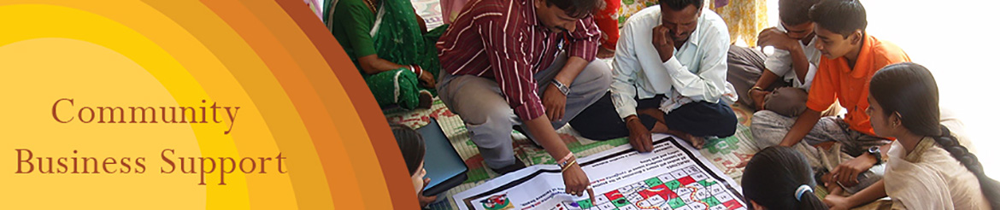
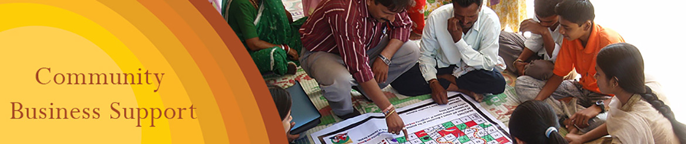

- IRFT invites you to Parivartan Crafts Mela on 16th October 2016. Follow Us on Facebook for more Updates.
- Fire Safety Workshop with Bombay Chambers of Commerce and Industry (BCCI).
- IRFT engaged in a ‘Capacity Building Project on Decent Work’ for Ambuja Cement Foundation.
- IRFT celebrates World Fair Trade Week from 9th to 15th May 2015. Follow Us on Facebook for more Updates.


Intervention Areas
Goal
“Enhance the ability of self-sustenance among the community by upgrading their competence through meaningful intervention”.
Objectives
- To increase the outreach, impact and long-term sustainability of a defined community, it is necessary and important to develop, train and handhold producer groups or small NGOs towards their own self-sustenance and growth.
- To catalyze locally relevant employment opportunities and thereby impact the standard of living of a defined community.
-
Specifically, the community intervention will focus a strategic approach towards;
- Building mutual confidence and respect and thus self sustenance.
- Jointly define areas of commitment, and
- Building trust
- To increase the outreach, impact and long-term sustainability of a defined community, it is necessary and important to develop, train and handhold producer groups or small NGOs towards their own self-sustenance and growth.
The interventions of CBS are tailor-made to meet the partner organisation specific needs. The intervention areas for each programme and organisation are therefore unique, and innovative in itself. Significantly, the intervention is based on a Hand-holding Approach and a Continuous Improvement Model.
1. Capacity Building
In order to ensure sustainability of CBE’s, it is essential to build their capacities to meet business and market demands. The focal point of Capacity Building within the community and the producer organisations can address business plan creation, impact assessments or assessments depending on organisational needs.
2. Vocational Training
Developing / enhancing skills training towards better employment opportunities and income generation for self sustenance of a group or a defined community at large.
3. Networking
To catalyse the organisations’ success (NGOs/ CBOs/ MSMEs) by - building their self-confidence; productivity and employment; increasing their income, and ultimately facilitating the growth of the organisation through a resource pool of experts and allied organisations (government and non-government).
4. Tracking Progress
- Pre and Post Evaluations and Assessments of projects for NGOs/ CBOs/ MSMEs.
- Documentations and recording.
- On-film documentation.
- Case studies/ success stories.
5. Community Development Initiatives
The intent for undertaking this initiative is to understand the measurable impact on a specific community, identify gaps and organise them within a minimum of 3 years. Our support services aim to strengthen the livelihoods of both rural/ urban Community Based Enterprises (CBEs).
6. Research Projects
- Expertise in rural community based research studies.
- Farm and non-farm sectors.
7. Collaborative projects in all sectors
Joint venture projects with Business Houses for community based intervention programmes for all sectors of rural and urban communities.
8. Market access through exhibition/ fairs/ corporate tie-ups
- Market study for producer organisation to understand market trends, demand, potential, competition, existing supply chain, its intermediaries, trade barriers, prices, margins, etc.
- Create a strategic marketing plan for the NGOs/ producer organisations.